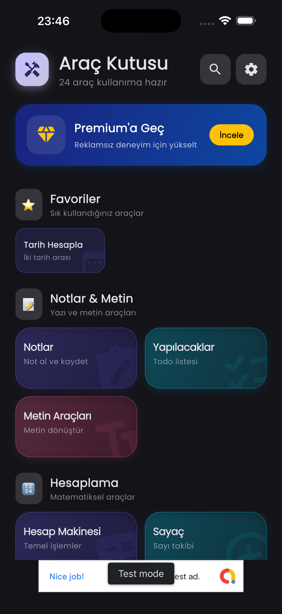
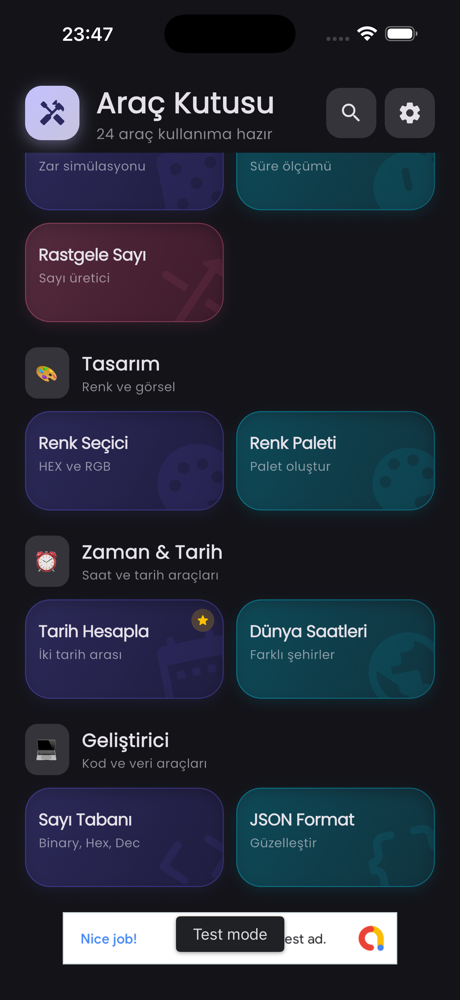
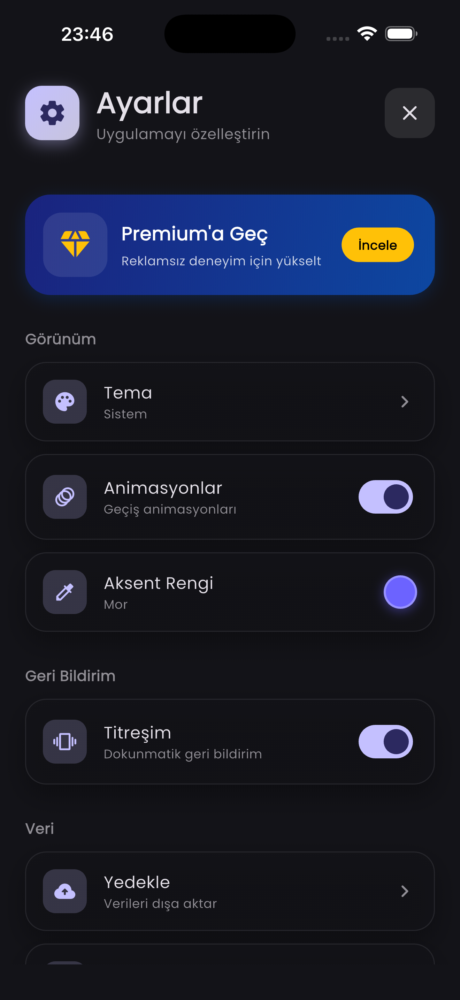
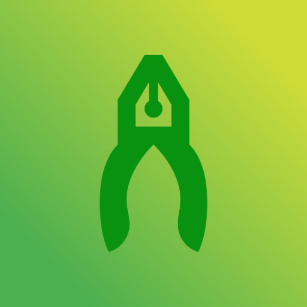

Projeler
Ihtiyacin olan arac,
Cok Amacli Araclar
Ihtiyacin olan arac,
hep cebinde.
Gunluk dijital ihtiyaclarin icin hepsi bir arada arac seti.
Toolbox; birim cevirici, renk secici, QR kod olusturucu ve daha bircok faydali araci tek bir cati altinda toplar. Sade arayuzu ile ihtiyacin olan araca saniyeler icinde ulas.
Araclar
Araclar
Tek uygulama, onlarca is
Her biri hizli ve sade; ihtiyacin olan araci sec, isini bitir.
Birim Donusturucu
Uzunluk, agirlik, sicaklik ve daha fazlasi.
QR Kod
QR olustur ve aninda okut.
Renk Secici
Renk sec, palet uret, kodunu kopyala.
Sifre Olusturucu
Guclu, rastgele sifreler uret.
Sayac & Kronometre
Geri sayim ve kronometre tek yerde.
Not Defteri
Hizli notlar al, sakla ve eris.
Arayuz
Uygulamadan gorunumler




Tum araclar tek dokunusta
Toolbox cok yakinda. Gelismelerden haberdar olmak icin bizimle iletisimde kal.
Haberdar Ol